소수를 위한, 그러나 모두를 위한 디자인
Design for the few, but for All.
사회진화에 따른 디자인진화
우리 사회가 발전되어감에따라 산업의 관점에서 발전해온 디자인이 가치의 관점으로 나아가고 있습니다. 대표적인 예가 공공디자인인데 2016년 세계 최초로 만들어진 ‘공공디자인 진흥법’에 의해서 디자인이 기존 산업제품의 미적 경제적 발전을 위한 도구에서 국민의 안전, 편의, 배려, 품격이라는 비전을 위한 전략이자 수단으로 활용되도록 하는 선진적인 정책과 제도가 만들어 졌습니다. 법률 제10조 2항에서는 연령, 성별, 장애 여부, 국적 등에 관계없이 모든 사람들이 안전하고 쾌적하게 환경을 이용할 수 있는 디자인을 지향할 것을 제시하고 있습니다.
또한 공공디자인 진흥법을 근거로 나은 국가 정책계획인 <공공디자인 진흥종합계획>에서는
5개의 주요 전략중 ‘모두를 위한 배려’가 그중 하나인데 세부 실천 전략으로 1.누구나 걷기 편한 거리·공간 조성, 2.장애인, 고령자를 위한 문화·생활공간 유니버설디자인 그리고 3.누구나 이용하기 편한 행정서비스 디자인등 3가지 전략으로 설정되었습니다.
그림 1 장애인, 고령자, 바퀴사용자등을 위한 무단차 공간, 통합 길찾기 정보, 환경색채 정온화, 보행영역 통합을 적용한 공공 공간 조성
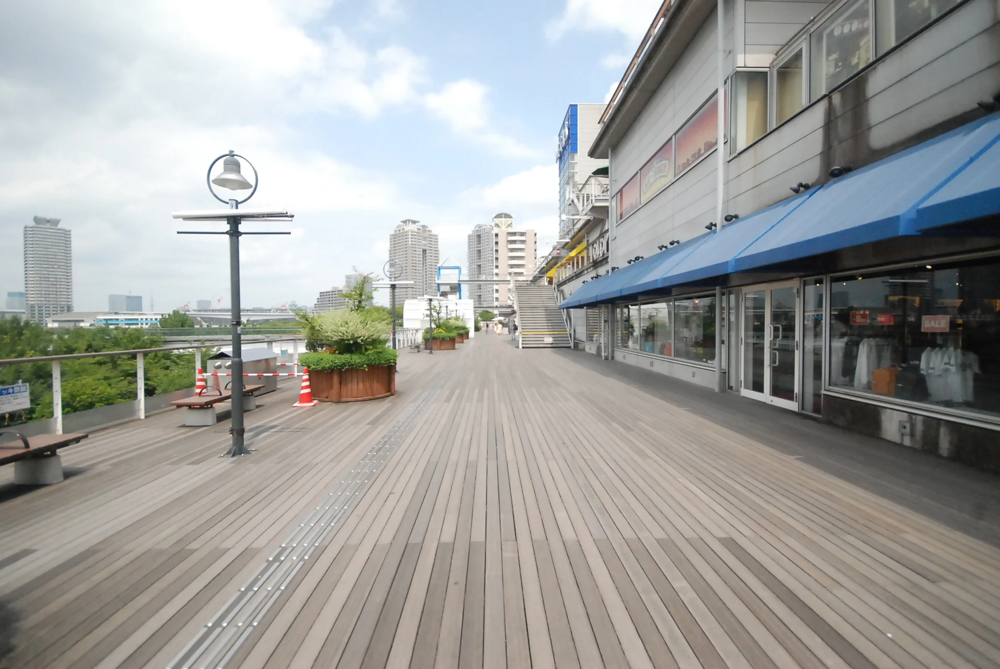
모두를 위한 배려의 디자인
국가 계획인 공공디자인 진흥종합계획에서 얘기하는 모두를 위한 배려의 디자인은 유니버설 디자인(Universal design)과 맥락적으로 유사합니다.
유니버설 디자인(Universal design)은 로널드 메이스교수가 1970년대 개념을 제시하고 노스캐롤라이나 주립대학교 유니버설디자인센터에서 정립한 개념으로 유니버설 디자인은 성별, 연령, 국적, 문화적 배경, 장애의 유무에 상관없이 누구나 손쉽게 쓸 수 있는 시설 및 사용 환경에 대한 디자인 개념을 의미합니다.
지금은 더 나아가 포용 디자인(Inclusive design)이 UN-Habitat의 새로운 도시 의제로 설정되면서 모두가 접근 가능하며, 모든 사람이 동시에 혜택을 고루 나누는 도시. 이러한 지향점을 바탕으로 시민 참여가 보장되고 사회적 경제적 문화적 다양성이 존중되며 시민들이 도시 공공공간을 누릴 수 있는 권리를 보장받는 디자인의 개념까지 발전해가고 있습니다
*유니버설 디자인에 대한 다양한 설명과 정의
“한 사람 한 사람의 인간성을 존중하는 사회환경 만들기”에 대한 것으로, 사람들의 다양한 특성을 이해하는 인문환경과 이들의 생활이 이루어지는 물리적 환경, 그리고 사람들의 생활을 지원하는 사회적 환경까지 총체적으로 포함”
“성별·연령·국적·신체 크기·왼손잡이·질병 등에 의한 차이 뿐만 아니라 개인의 다양성에 의한 각기 다른 체력, 이동 및 인지능력, 일시적 불편사항 등의 다름에 의한 다양한 이용자를 고려한 모든 시민이 안전하고 편리하게 살아갈 수 있는 도시환경 조성”
유니버설 디자인의 중요성은 ‘모두를 위한 디자인’을 통해 소외된 사람 없이 모두가 편리하고 안전한 사회를 만든다는 비전에 있으며 우리 사회가 산업중심의 사회에서 사람중심 사회로 성장해 가면서 우리 공간 환경에 ‘공평한 배려’라는 요소를 적용할 수 있는 방법이기 때문입니다.
그림 2 휠체어, 유모차, 자전거등 바퀴시설의 특수사용자를 고려한 휠 전용 페이빙 레인.
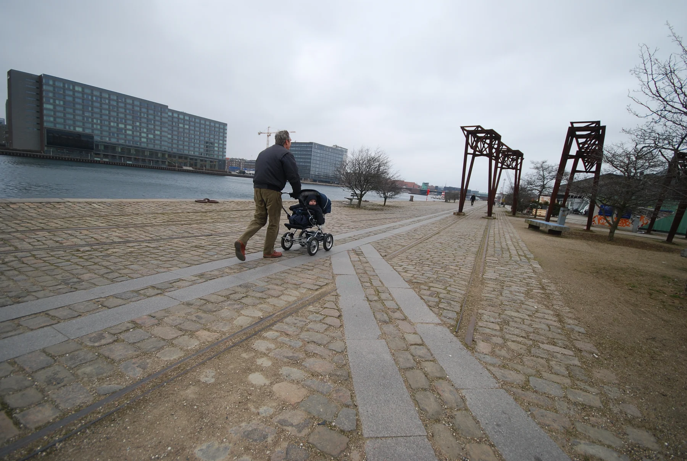
‘최소를 위한 것이 최대를 위한 것이다’
앞서 유니버설 디자인의 개념을 정립한 노스캐롤라이나 주립대학교 유니버설디자인센터에서는 "THE PRINCIPLES OF UNIVERSAL DESIGN"을 통해 7가지의 원칙을 정리하였는데요 내용은 다음과 같습니다.
원칙 1. 공평한 사용 (Equitable Use)
원칙 2. 사용상 유연성 (Flexibility in Use)
원칙 3. 간단하고 직관적인 사용 (Simple and Intuitive Use)
원칙 4. 알아챌 만큼 충분한 정보 (Perceptible Information)
원칙 5. 실수를 감안 (Tolerance for Error)
원칙 6. 적은 물리적 노력 (Low Physical Effort)
원칙 7. 접근, 사용 적절한 크기와 공간 (Size and Space for Approach and Use)
쉽게 말해 사용에 불리함이 없는 공평성을 기본으로 쉽게 직관적, 물리적으로 이용하기 쉽고 실수나 사용중 실수를 고려한 적절한 디자인을 하는 것이라고 이해할 수 있습니다. 사실 유니버설 디자인은 지금 대다수가 이해하는 것처럼 장애인을 위한 특수한 영역이 아니라 장애인 비장애인 모두가 사용하는데 있어 어렵지 않게 만드는 디자인을 통한 공간복지의 구현이라고도 볼 수 있습니다.
유니버설 디자인은 ‘소수의 사용자나 특정계층’만을 위한 것이 아닌 ‘소수의 사용자나 특정계층’까지 사용하는데 어렵지 않게 만드는 최대다수를 위한 디자인인 것입니다.
결국, 유니버설의 특화성은 결국 모든이를 위한 범용성이 되는 것이고 이는 곧, ‘최소를 위한 디자인이 최대를 위한 디자인이 되는것입니다.’
<다이어그램 _ 최소의 디자인 최대한 디자인>
able하게 만들기 _ Legible Design
유니버설
여기 의자가 하나 있습니다.
의자의 높이는 45cm입니다.
1. 유니버설디자인의 이해
□ 국내 공공기관에서의 정의
“한 사람 한 사람의 인간성을 존중하는 사회환경 만들기”에 대한 것으로, 사람들의 다양한 특성을 이해하는 인문환경과 이들의 생활이 이루어지는 물리적 환경, 그리고 사람들의 생활을 지원하는 사회적 환경까지 총체적으로 포함”
“성별·연령·국적·신체 크기·왼손잡이·질병 등에 의한 차이 뿐만 아니라 개인의 다양성에 의한 각기 다른 체력, 이동 및 인지능력, 일시적 불편사항 등의 다름에 의한 다양한 이용자를 고려한 모든 시민이 안전하고 편리하게 살아갈 수 있는 도시환경 조성”
□ 문화시설 유니버설디자인 6 원칙 _ 문호체육관광부
(1) 누구나 쉽게 접근할 수 있는 문화시설
휠체어사용자, 시각장애인 등 누구나 문화시설의 출입구, 내부시설, 위생시설, 공연장, 전시장 등에 힘들이지 않고 접근할 수 있다.
(2) 누구나 원하는 곳에서 즐길 수 있는 공간디자인
휠체어사용자를 포함하여 누구나 문화시설의 원하는 좌석에서 동행자와 함께 공연 등을 즐길 수 있다.
(3) 누구나 알기 쉬운 문화시설 안내정보
작은 글씨를 읽을 수 없는 노인, 외국인, 시각장애인 등 누구나 문화시설의 안내사인이나 홈페이지의 정보를 인식하고 이해할 수 있다.
(4) 누구나 이해하기 쉬운 문화 프로그램 정보 제공
청각장애인,외국인 등 누구나 문화시설의 프로그램 및 콘텐츠를 인식하고 이해할 수 있다.
(5) 누구나 편리하고 안전하게 이용할 수 있는 서비스 제공
유아동반자, 시각장애인, 휠체어사용자 등 누구나 유모차대여, 물품보관 등의 문화시설 이용 관련 서비스를 이용할 수 있다.
(6) 누구나 이해하기 쉬운 문화 프로그램 서비스 제공
청각장애인, 시각장애인, 외국인 등 누구나 문화시설의 각종 프로그램 및 콘텐츠 관련서비스를 이용할 수 있다.
□ 유니버설 디자인의 비전
“이용자의 행태에 기반한 맞춤형 디자인의 확대를 통한 포용적인 사용 배려를 지원하는 구조의 디자인”
□ 유니버설 디자인 유관 법규
- 서울시 유니버설디자인 도시조성 기본조례 (2019.03.28)
[목적]
시민이 보편적인 환경 속에서 보다 안전하고 편리하게 살아갈 수 있도록 공공시설을 비롯한 생활환경에 유니버설디자인이 적용된 도시조성을 목적으로 함
[기본이념]
시민이 공평하게 사용 가능한/취향과 능력에 관계 없이 유연성이 높은/시민이 손쉽고 편리하게 사용할 수 있는/안전하게 사용할 수 있는/필요한 정보를 정확하게 전달하고 이해하기 쉬운 디자인 적용/환경친화적이고 지속 가능한 디자인 적용
-서울시 사회문제해결디자인 조례
[목적]
디자인을 통해 서울특별시민의 역량을 활용하고 사회문제에 대한 해결방안을도출하기 위해 필요한 사항을 정함으로써 서울특별시민의 삶의 질 향상에 이바지함을 목적으로 함
[기본이념]
"사회문제해결디자인"이란 다양한 사회문제에 대한 서울특별시민들의 요구를 파악하고 시민과 협력하여 디자인을 통해 효율적인 해결방법을 제시하는 디자인 과정 및 활동을 말함
[적용범위]
성별, 인종, 장애유무 등 사회적 차별 해소를 위한 디자인
범죄, 재난, 사고 등으로부터 안전과 심리적 안심을 제공하는 디자인
소외, 고립, 스트레스 등으로부터 건강과 정서적 안정감을 증진하는 디자인
- 장애인 · 노인 · 임산부 등의 편의증진보장에 관한 법률(보건복지부)
장애인 · 노인 · 임산부 등이 다른 사람의 도움이 없이 안전하고 편리하게 시설 및 설비를 이용하고 정보에 접근하도록 보장함으로써 이들의 사회활동 참여와 복지증진에 이바지함을 목적으로 1997년 제정된 법 ‘장애인 편의증진법’이라고도 함
- 장애인 · 고령자 등 주거약자 지원에 관한 법률(국토교통부)
장애인·고령자 등 주거약자의 주거 안정과 주거 수준 향상에 이바지함을 목적으로 제정된 법규
주거약자의 쾌적하고, 안전한 주거생활에 필요한 정보가 원활하게 제공되고, 편의시설이 주거 약자용 주택에 적정하게 설치될 수 있도록 함
□ 유니버설디자인의 동향
1단계 . 장애인, 고령자를 위한 유니버설디자인
신체적 약자와 고령자 등 사회적 약자를 포용, 존중하는 디자인
2단계. 사회 통합적 유니버설디자인
다양한 신체적 특성을 지닌 사용자를 고려·수용하기 위한 디자인
3단계. 사회 통합적 범용디자인
인간의 다양한 활동과 보건, 건강, 사회 참여 등을 증진하기 위한 디자인
2. 유니버설디자인의 확장
□ 항상적 장애 개념 및 특성
- 항상적 장애는 신체적 장애와 정신적 장애로 나누어 지며 시각·청각·정신·지체·언어·뇌병변·자페성·지적장애로 나뉘어지며 대개 5개의 유형(시각·청각·정신·지체·언어)으로 분류하며 이로 인한 일상활동의 제한을 항상적으로 겪는 경우 항상적 장애로 구분
- 항상적 장애를 해소·극복해주는 도구적 지원이 필요한 경우가 대부분으로 이로 이한 사회활동의 제약이 누적될 수 있는 상태
1) 시각적 항상 장애
사물의 존재·형태를 판별, 혹은 물건 색깔을 구분하는 눈의 기능에 항상적 어려움이 있는 경우
2) 청각적 항상 장애
귀에서 뇌에 이르는 청각 기관 이상으로 소리를 듣지 못 하거나 들은 소리의 뜻을 이해하지 못하는 경우
3) 정신적 항상 장애
사고 기능·능력 장애로 인해 일상·사회활동을 하는데 있어 제한을 받아 다른 사람의 도움이 필요한 경우
4) 지체기능 항상 장애
골격·근육·신경 중 어느 일부 손상으로 영구적으로 그 기능을 발휘하지 못해 일상활동의 제한을 받는 경우
5) 언어적 항상 장애
음성 또는 언어장애로 의사소통이 어렵거나 의사 소통이 이루어지지 못하는 경우
□ 일시적 장애 개념 및 특성
- 임산부, 노인, 질환 치료중인 경우, 짐을 많이 든 경우 등 평소 일상생활에 있어 항상적 장애가 없으나 상황에 따라 도구 혹은 질환으로 인해 일시적으로 시각적·청각적·정신적·지체적·언어적 반응 및 판단 등이 취약해지는 장애를 겪을 수 있는 경우
- 이로 인해 주·야간 보행, 운전, 휴게 등의 상황에서 편의불편 혹은 위험노출의 상황에 방치되어 치상율 및 치사율이 높아져 피해가 심각할 수 있는 상태
- 항상적 장애가 아닌 도구 혹은 질환으로 인한 일시적으로 장애를 겪는 경우로 장애 발현을 잠재한 상태
1) 시각적 일시 장애
선글라스 착용/ 시력이 좋지 않거나 눈에 관계된 질환 치료 중인 경우 등
2) 청각적 일시 장애
이어폰 착용, 귀보호대 착용/ 청각 관계 질환 치료중인 경우 등
3) 정신적 일시 장애
스몸비족/주취자, 스트레스 과다, 수면부족, 우울증 등 정신과 치료 중인 경우 등
4) 지체기능 일시 장애
캐리어·노인보행보조기구 사용/짐을 많이 든 사람, 임산부, 팔·다리 상해로 인해 치료 중인 경우 등
5) 언어적 일시 장애
마스크 착용/의사소통이 어려운 외국인, 인후부 관련 치료 중인 경우 등
그림 3 틈새가 촘촘해서 유모차바퀴가 빠지지 않고 표면에 돌기를 주어 미끄러지지 않게 한 배수구 덮개
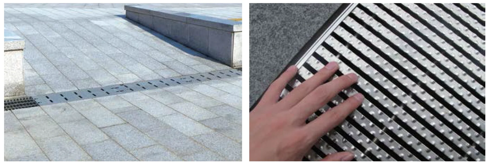
공평한 사용 (Equitable Use)
원칙 2. 사용상 유연성 (Flexibility in Use)
원칙 3. 간단하고 직관적인 사용 (Simple and Intuitive Use)
원칙 4. 알아챌 만큼 충분한 정보 (Perceptible Information)
원칙 5. 실수를 감안 (Tolerance for Error)
원칙 6. 적은 물리적 노력 (Low Physical Effort)
원칙 7. 접근하고 사용하기에 적절한 크기와 공간 (Size and Space for Approach and Use)
원칙 1. 공평한 사용 (Equitable Use) - 다양한 능력의 사람들에게 유용하고 팔릴 수 있도록 디자인한다.
(최대한 동일하게) 모든 사용자가 같은 방법으로 사용할 수 있게 한다.
어떤 사용자 집단을 다른 집단과 구분하거나, 낙인을 찍지 않는다.
모든 사용자에게 프라이버시, 보안, 안전이 동등하게 제공되도록 한다.
모든 사용자의 마음에 들도록 한다
원칙 2. 사용상 유연성 (Flexibility in Use) - 개인 선호나 장애, 능력과 관련하여 넓은 범위에 맞출 수 있도록 디자인한다.
사용자가 여러 사용 방법들 중에서 선택할 수 있도록 한다.
사용자가 왼손잡이든 오른손잡이든 접근해서 사용할 수 있도록 한다.
사용자가 정확성과 정밀성을 향상시킬 수 있도록 돕는다.
사용자의 보폭이나 속도에 맞출 수 있도록 한다.
원칙 3. 간단하고 직관적인 사용 (Simple and Intuitive Use) - 사용자의 경험이나 지식, 언어, 집중도와 무관하게 이해하기 쉽도록 디자인한다.
필요 이상으로 복잡하지 않게 한다.
사용자의 기대와 직관에 부합하게 한다.
사용자의 읽기 능력이나 언어 종류와 관련하여 넓은 범위에 맞출 수 있게 한다.
중요도에 따라 정보를 배열한다.
과제를 완료하는 도중이나 이후에 효과적인 피드백을 제공하고 격려를 한다.
원칙 4. 알아챌 만큼 충분한 정보 (Perceptible Information) - 사용자의 감각 능력이나 환경 조건과 무관하게 사용자에게 충분한 정보를 효과적으로 전달할 수 있게 디자인한다.
필수 정보를 충분히 나타낼 수 있도록 여러 방식을 사용한다. 예를 들어 그림으로 표시하고, 소리로 알려주고, 만져서 알 수 있게 하는 등.
필수 정보와 부가 정보가 적절히 대비되도록 한다.
필수 정보에 대해 판독 가능성을 극대화한다.
묘사할 수 있는 다양한 방법으로 여러 요소들을 차별화한다. 즉 어떻게 하라고 하거나, 방향을 가리키는 것을 쉽게 한다.
감각에 제약이 있는 사람들이 사용하는 다양한 장치나 도구에 상응하도록 한다.
원칙 5. 실수를 감안 (Tolerance for Error) - 사용자가 잘못 쓰거나 예상하지 못한 행동을 하더라도 위험이나 역효과가 최소가 되도록 디자인한다.
위험과 실수가 최소가 되도록 요소를 배치한다.: 가장 많이 쓰는 요소는 가장 접근하기 쉽도록 하고, 위험한 요소는 제거하거나 고립시키거나 방어하는 방식으로.
위험이나 실수에 관해 경고한다.
실패하더라도 안전하게 한다.
주의를 요구하는 일에서는 무의식적으로 행동하지 못하게 한다.
원칙 6. 적은 물리적 노력 (Low Physical Effort) - 사용하기 편하고 피로가 줄이도록 디자인한다.
균형잡힌 자세로 사용할 수 있게 한다.
적절히 조작할 수 있는 힘으로 사용할 수 있게 한다.
반복하는 동작을 최소로 한다.
자세를 유지하기 위해 드는 힘을 최소로 한다.
원칙 7. 접근하고 사용하기에 적절한 크기와 공간 (Size and Space for Approach and Use) - 사용자의 체구, 자세, 이동성과 무관하게 접근하고 사용하기 편하도록 크기와 공간을 디자인한다.
사용자가 앉아 있든 서 있든 중요한 요소들이 잘 보이게 한다.
사용자가 앉아 있든 서 있든 모든 구성 요소에 손이 닿도록 한다.
다양한 손 크기에 맞춘다.
보조 기기나 개인별 보조 장치를 사용할 수 있도록 적절한 공간을 제공한다.
Legible Design
소위 사악한 문제(Wicked Problem)라는 개념이 있다. 현대의 사회가 다가치화 되어 가면서 판단의 기준 또한 복잡해지면서 사회적으로 협력을 통해 풀어나가야 하는 것을 의미한다.
소위말하는 표준화를 통한 대량생산과 경제적 효율성에서 장점을 보인것들이 사회에 발전에 따라 다양한 가치들을 중시하는 풍토속에서 한계가 나타나기 시작한 것이다.
디자인을 한다는 것
정말로 정답이 있을까 _ 다가치사회의 현황
배제를 위한 디자인 _ 배제를 통한 포용
~able의 디자인 : 읽기쉽게 만들기 Legible
다양한 정서적 장애를 위한 디자인 _ 형이상학적인 디자인의 발전
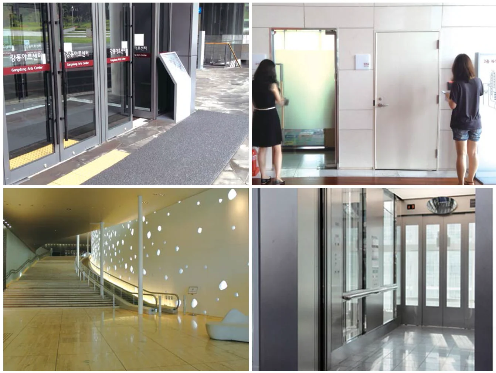
- 건축물의 수평·수직적 내부공간에 설치된 편의시설 (주출입구, 출입문, 복도, 계단, 경사로, 엘리베이터, 에스컬레이터)
출입구를 이용하는 데는 휠체어사용자뿐만이 아니라 유모차사용자, 커다란 물건을 운반하는 사람, 목발사용자, 임산부, 어린이도 어려움을 겪는 경우가 많다. 문제의 원인은 출입문의 폭만이 아닌 문의 종류, 문이 열리고 닫히는 속도 등 다양하다. 즉 내부시설에 있어 복도의 폭과 바닥의 재질, 경사로의 폭과 각도 등이 적절하지 않으면 불편을 초래하게 되고 엘리베이터조작 패널의 높이, 숫자표기가 제대로 되어있지 않으면 어린이, 시각 장애인 등도 이용하는데 불편함을 느끼게 된다.
- 주출입구 : 눈에 띄기 쉬운 위치에 설치하고, 모든 이용자들이 접근하여 통과할 수 있도록 적절한 통과 여유 폭을 제공한다.
- 출입문 : 휠체어사용자, 유모차사용자, 목발이용자 등을 배려하여 미닫이문이나 자동문을 설치하는 것이 바람직하다.
- 복도 : 모든 이용자들이 이동하기 쉽도록 통과 유효폭을 충분히 제공하고, 미끄럼방지가 되는 바닥재질을 선택한다.
- 계단·엘리베이터 : 계단, 엘리베이터, 에스컬레이터를 함께 설치할 경우에는 이
용자들이 그 중의 하나를 선택할 수 있도록 나란히 설치하는 것이 바람직하다.
시각장애인의 출입이 많은 주출입구에는 점자안내판과 함께 음성안내장치를 설치한다.
그림 5 유모차나 양손에 짐을 들고 있는 사람을 위한 자동 미닫이문 설치
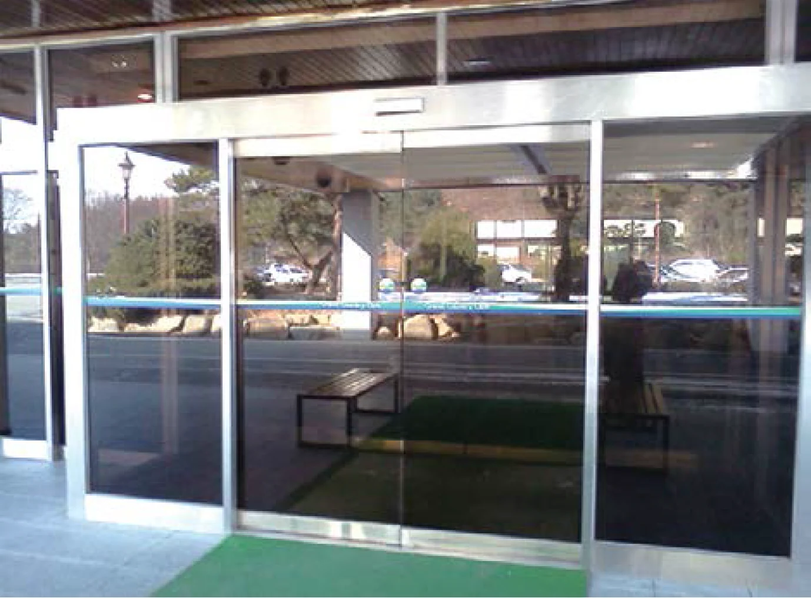
• 음성안내장치는 수신기의 스위치를 눌러 발신기가 있는 방향으로 향하면 스피커에서 음성안내를 해준다
그림 6 음성유도장치의 발신기와 수신기
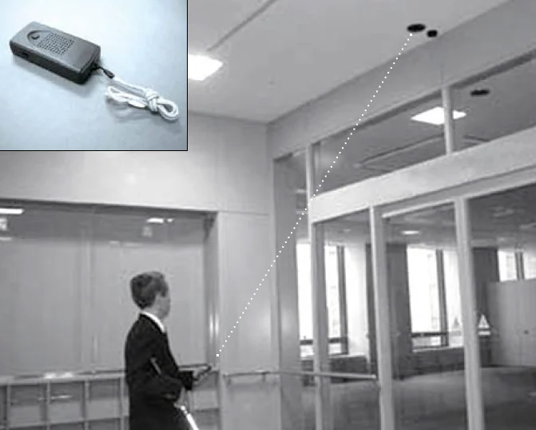
그림 7 시각역자는 색조-채도가 아닌 명도차이로 인한 인식이 용이하다.
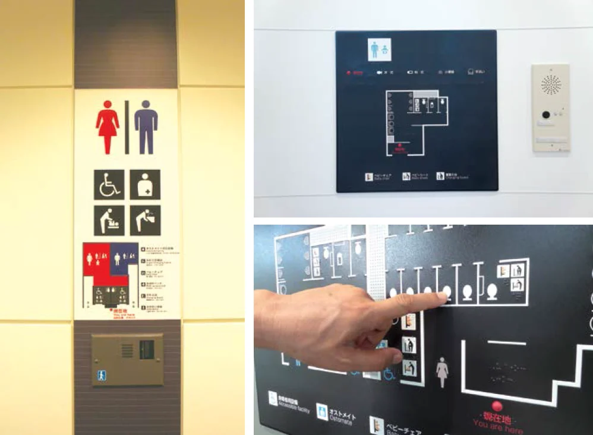
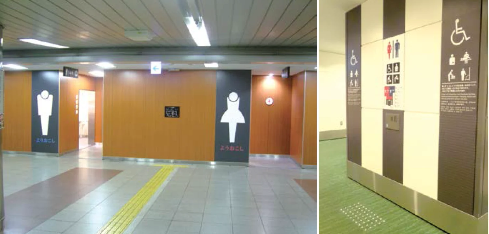
시각역자는 색조-채도가 아닌 명도차이로 인한 인식이 용이하다.
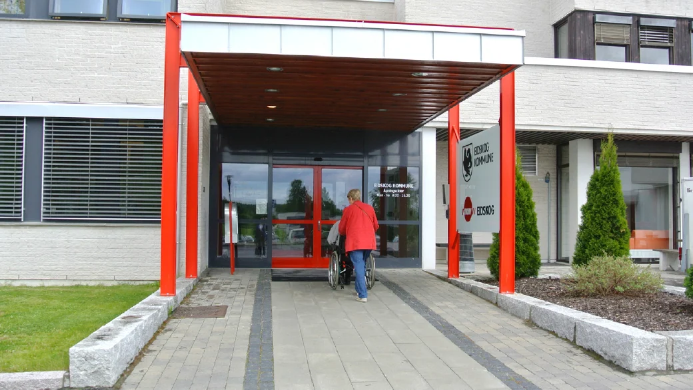
단차가 없고 누구나 인지하기 쉬운 색채가 강화된 주출입구
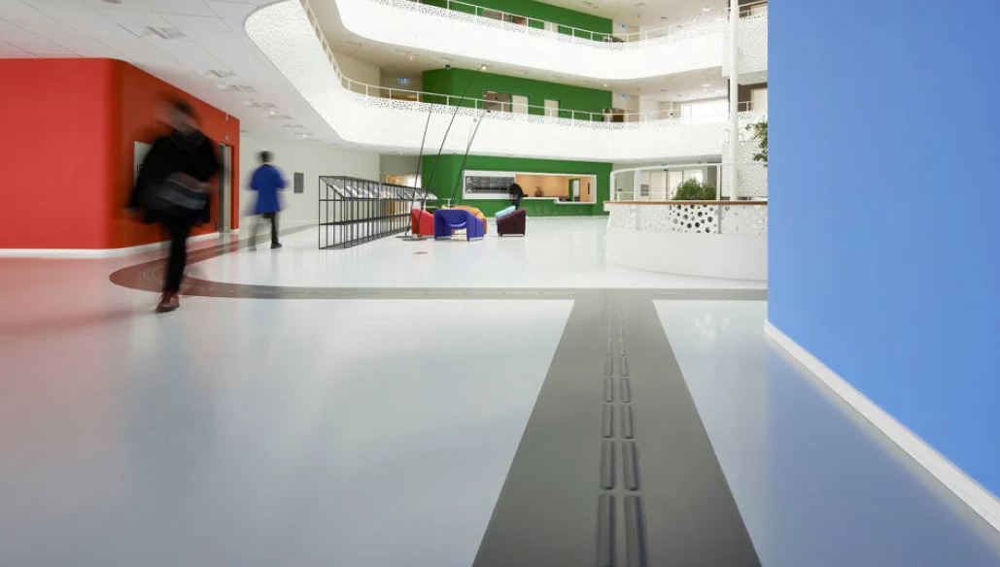
이해하기 쉬운 공간 구조의 디자인 Legible
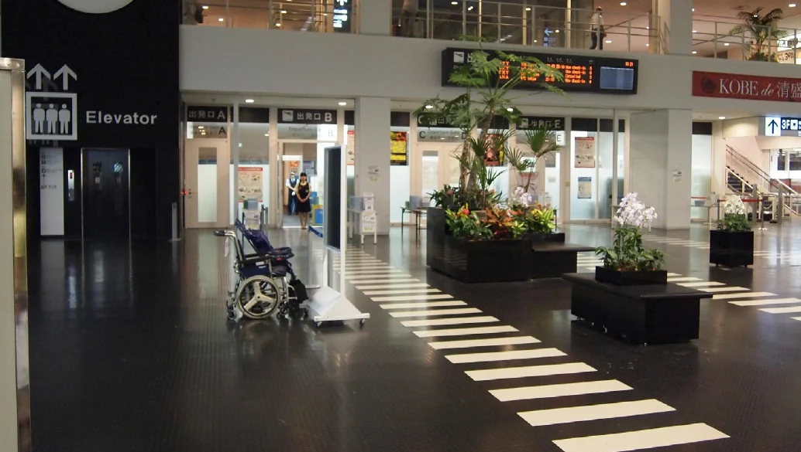
방향성이 있는 바닥 패턴 디자인
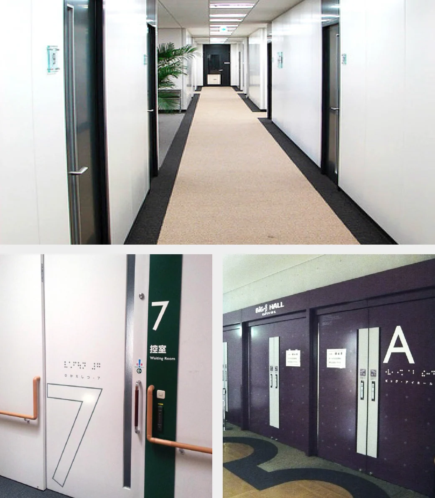
공간구조 인식률으ㄹ높이는 명시성 디자인
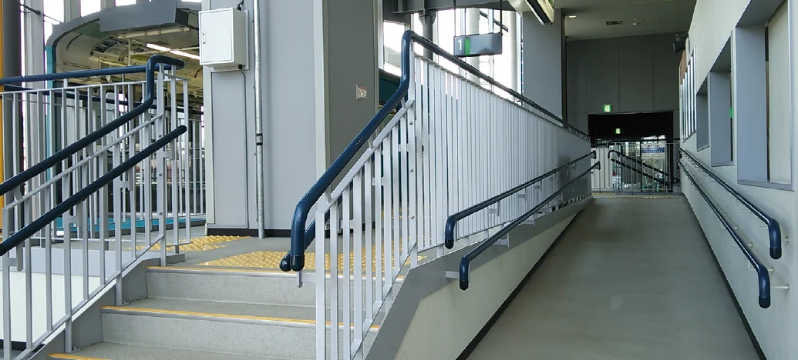
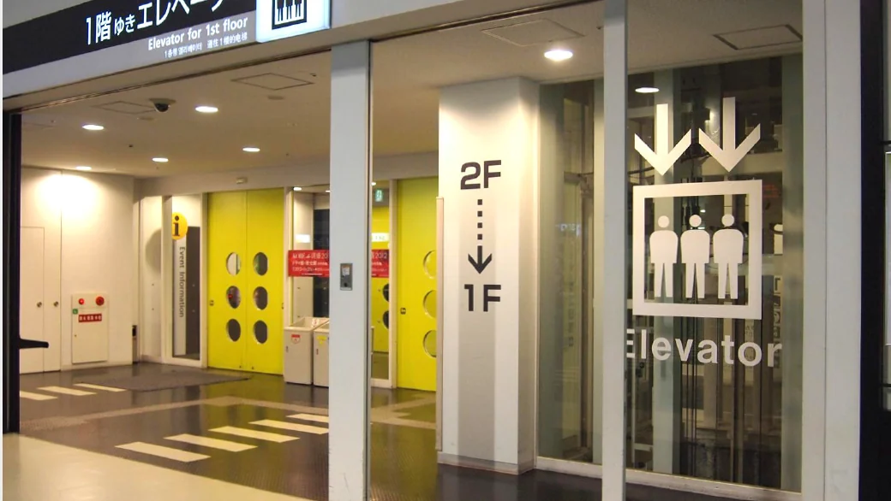
영역성 강화
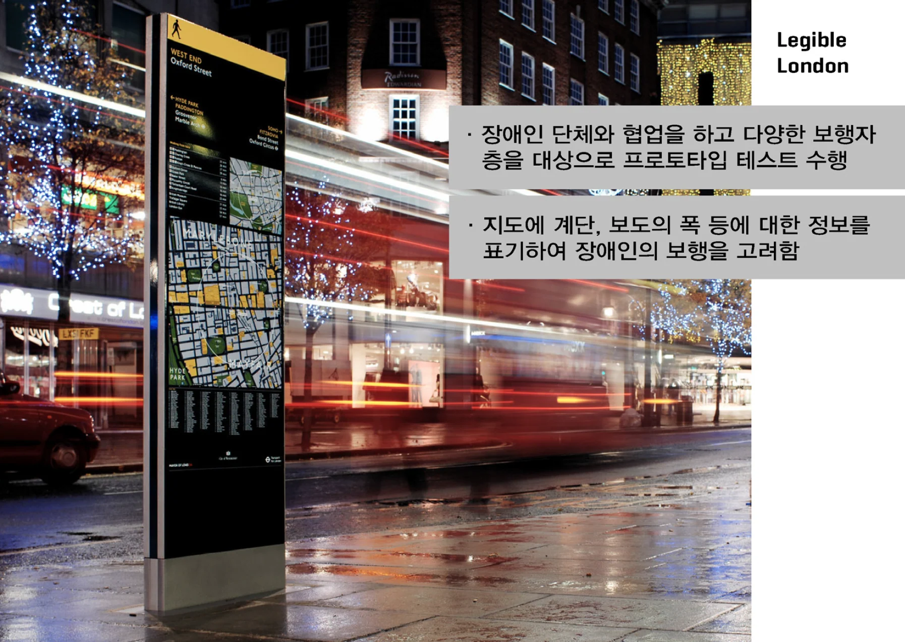
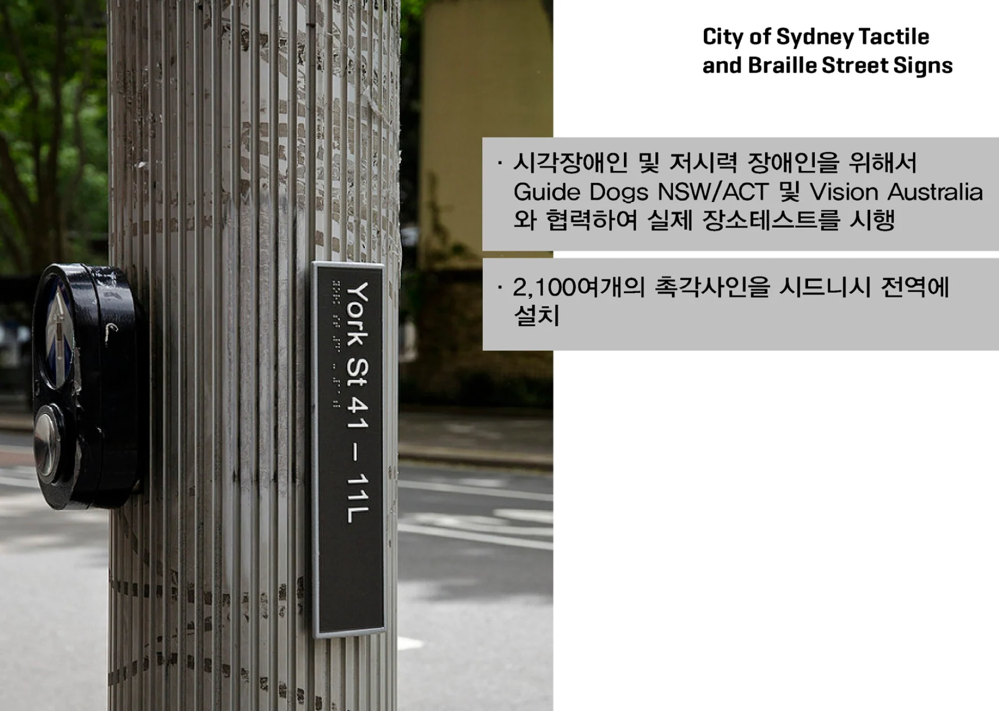
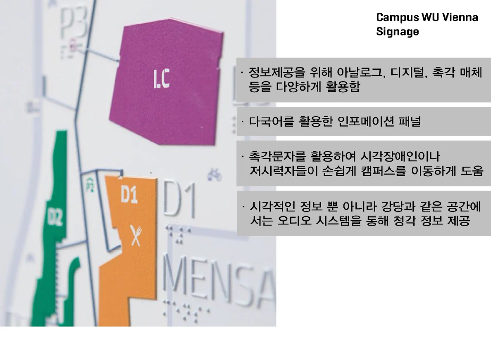
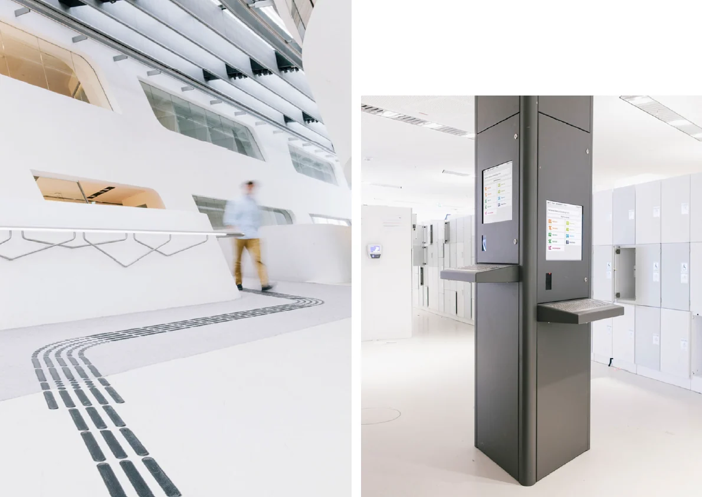